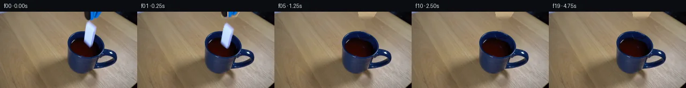

![首帧]()

Round 00
2026-11-05T00:18:16.948962+00:00像素候选变化代码 +266/−0inspection 更新
pixels 569ed41d01a1c6d7 · code 1548a57c3b6f072d
查看本轮 generate.py 真实 diff
--- previous/generate.py
+++ current/generate.py
@@ -0,0 +1,266 @@
+"""Local source-pixel compositing and analytic liquid animation. No external assets."""
+from pathlib import Path
+import json
+import numpy as np
+import cv2
+from PIL import Image, ImageDraw
+from scipy.ndimage import gaussian_filter, binary_fill_holes
+from artifact_io import save
+
+ROOT = Path(__file__).resolve().parent
+W, H = 256, 144
+SOURCE = np.asarray(Image.open(ROOT / 'first_frame.png').convert('RGB'))
+F = SOURCE.astype(np.float32)
+Y, X = np.mgrid[:H, :W].astype(np.float32)
+SS = 4
+
+def polygon(points):
+ m = Image.new('L', (W*SS, H*SS))
+ ImageDraw.Draw(m).polygon([(round(x*SS), round(y*SS)) for x,y in points], fill=255)
+ return np.array(m.resize((W,H), Image.Resampling.LANCZOS)).astype(np.float32)/255
+
+def over(base, color, alpha):
+ a = np.clip(alpha,0,1)[...,None]
+ return base*(1-a)+np.asarray(color)*a
+
+# Masks derived from the one supplied input and the measured object footprints.
+domino_poly = polygon([(165.1,18.2),(179.5,28.6),(170.4,65.7),(156.1,55.8)])
+domino_alpha = gaussian_filter(domino_poly, .65)
+domino_region = (domino_alpha > .008) & (Y >= 17) & (Y < 70)
+# Include the faint top-tip blur that lies outside the main quadrilateral.
+domino_region |= ((X>161)&(X<174)&(Y>=17)&(Y<25)&(F[:,:,2]-F[:,:,0]>5))
+object_cool = (F[:,:,2]-F[:,:,0]>25) | (F[:,:,0]<82)
+tool_region = object_cool & (X>=154)&(X<=191)&(Y<=16)
+tool_region = cv2.dilate(tool_region.astype(np.uint8), np.ones((3,3),np.uint8)).astype(bool)
+tool_region &= Y<19
+remove = cv2.dilate((domino_region|tool_region).astype(np.uint8),np.ones((3,3),np.uint8)).astype(bool)
+
+# A stationary clean plate. Local inpainting is used on wood only; the missing
+# curved cup opening is reconstructed using its visible, sheared left profile.
+clean = cv2.inpaint(SOURCE, remove.astype(np.uint8)*255, 3, cv2.INPAINT_TELEA).astype(np.float32)
+row_axis = 159.8+.22*(Y-61)
+mirror_x = np.clip(2*row_axis-X, 0, W-1)
+mirrored = cv2.remap(F, mirror_x, Y, cv2.INTER_LINEAR)
+# Estimate the asymmetric rim lighting from visible corresponding edge pixels.
+right_pairs = (X>176)&(X<194)&(Y>=43)&(Y<62)&(~remove)
+right_pairs &= (F[:,:,0]<70)&(F[:,:,2]>F[:,:,0]+15)
+right_pairs &= (mirrored[:,:,0]<70)&(mirrored[:,:,2]>mirrored[:,:,0]+15)
+ratios = np.median((F[right_pairs]+2)/(mirrored[right_pairs]+2),axis=0)
+ratios = np.clip(ratios,[.50,.50,.60],[.90,.90,.95])
+right_rim = mirrored*ratios
+cup_pixel = (mirrored[:,:,0]<85)&(mirrored[:,:,2]>mirrored[:,:,0]+7)
+rebuild = remove & (Y>=36) & (Y<=69) & cup_pixel
+clean[rebuild] = right_rim[rebuild]
+
+# Copy locally available wood grain into the top-edge grabber hole, with a
+# per-row brightness correction measured outside the grabber.
+for y in range(19):
+ donor = F[y, np.clip(np.arange(W)-35,0,W-1)]
+ correction = np.mean(F[y,[151,193]]-donor[[151,193]],axis=0)
+ clean[y,tool_region[y]] = (donor+correction)[tool_region[y]]
+
+# The liquid fit is conditioned solely on visible brown liquid source pixels.
+liquid_samples = (X>=130)&(X<=186)&(Y>=49)&(Y<=85)&(~remove)
+liquid_samples &= (F[:,:,0]>1.3*F[:,:,2])&(F[:,:,0]<80)&(F[:,:,1]<24)
+liquid_points = np.column_stack([X[liquid_samples],Y[liquid_samples]]).astype(np.int32)
+hull = cv2.convexHull(liquid_points)
+liquid_binary = np.zeros((H,W),np.uint8)
+cv2.fillConvexPoly(liquid_binary,hull,255)
+liquid_alpha = gaussian_filter(liquid_binary.astype(np.float32)/255,.45)
+u=(X-159)/28; v=(Y-67)/18
+features = np.stack([np.ones_like(X),u,v,u*u,u*v,v*v,u**3,u*u*v,u*v*v,v**3],axis=-1)
+coefs=np.linalg.lstsq(features[liquid_samples],F[liquid_samples],rcond=None)[0]
+liquid_fit=np.clip(features@coefs,[3,1,1],[57,13,15])
+filled_liquid = remove & (liquid_binary>0)
+clean[filled_liquid]=liquid_fit[filled_liquid]
+# Match soft removal seams without modifying any pixels outside the local mask.
+soft = gaussian_filter(remove.astype(np.float32),.7)
+clean=over(F,clean,soft)
+clean=np.clip(clean,0,255)
+
+# Recover premultiplied ceramic colors, including its original illumination.
+# Opacity comes from source color contrast at the optical edge; the interior
+# uses the source RGB pixels directly. The polygon limits the extraction.
+a_geom=domino_alpha.copy()
+edge_blue=np.clip((F[:,:,2]-clean[:,:,2]) / np.maximum(248-clean[:,:,2],30),0,1)
+a = np.minimum(1, np.maximum(a_geom,edge_blue*(domino_region)))
+a *= domino_region
… diff truncated; 179 more lines …